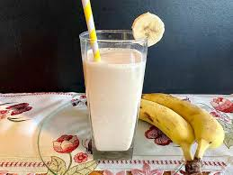

Korean Banana Milk

Description
The drink is made with high-quality milk sourced from Korean
dairy farms and is blended with real banana puree, giving it
a rich and fruity flavor. Binggrae Banana Milk is not only
tasty but also nutritious, as it is a good source of calcium,
protein, and other essential vitamins and minerals.
Ingredients
- 1 banana
- 1/2 cup whole milk
- 1/2 cup cold water
- 1 tablespoon pure maple syrup
- 1 teaspoon vanilla
- 4-5 ice cubes (optional)
Steps
-
Combine banana, milk, water, maple syrup and vanilla in the
blender cup. Blend until smooth.
-
Place ice cubes in glass (if using). Pour banana milk on top.